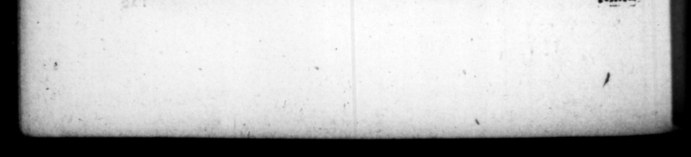

WY FF - # "TIE 255 C. SET. TRAN Q. ps &ſcarorumjacinora,phaſiano- called the ſhield of r A # of rum ze pavonum'. certbella, he bad tofs'd wp together vers Iingnas rhœnicoptermm, mu- J/carts, the brains of phaſants and peg. "rznarom Jaftes 4 Carpathio coets, with the to of flaming uſque, fretoque Hiſpahiz, per and the guts of lampreys, fetch'd "in made ac triremes petita- arge ſhips of war, as far as from rum commiſeuir. Ut autem homo non profunde modo, . {4 intempeſtivæ quoque ac ſordide gulz, ne in lacriticio quidem unquam, aut itinere ule temperavit, quin inter aultaria ibidem ſtatim viſcus & farra pzne rapta è foco manderet, cucaque viarum popinas fumautia opſonia, vel pridiana atque ſemeſa. Carpathian ſta, and the Fig feige. But he was not only 4 man of an inJatiable appetite, but would gratify it tos at wun/eaſonable times, and with any coarſe ſtuff that came in bis way fo that at a ſacrifice he could! not for. bear ſnatching from the fire fleſh and cakes, which eat upon the | ; and in 4 journey be wand do t'e ame in the vitualling houſes upon the road, whether the meat was jreſh dreſs'd and ſmoaking — or what had been left the day before, and was lalf aten, it was al 14. Pronus vero ad cujuſq; & quacumque de cauſſa, necem atque ſupplicium : noiles vifos, condifcipulos, & æquales ſuos omnibus blanditijs tantum non ad focie. tatem Imperii allicefactos, Vario genere fraudis occidit: etiam unum veneno manu ſua porrecto in aquæ frigidæ tione, quam is affectus fere popolcerar, Tum foenerarowm & ſtipulatorum publicanorumque, qui unquam ſe aut Romæ de bitum, aut in via quendam in ipſa ſalutatione ſupplicio traditum, ſtatimque revocaum cunctis clementiam laudantibus, coram interfici juſlit, velle ſe dicens paſcere oculgs, Alrerins penz duos filios adjecit deprecari pro patre conatos. & equitem Romanum proclamantem, cum raperetur ad poenam , Heres meu es, exhihere teſtamenti tabulas coegit : utque legit coheredem ſibi libertum ejus adſcriptum, jugulari cum liberto imperavit. Quoſdam & de plehe ob id ipſum, quod Venetæ factioni clare maledixerant, interemit: cons 1 rtorium flagitaſſent, vix ulli pepercit. Ex quibus one to him, down it went, 14. He had a wonderful inclination to be punifhing and with death too, without any 4 eben of perſons er becaſrons. Several noble men, his ſchool fellows and comrades;he invited to court, with ſuch an exceſs of complaiſance, as if he had meant almoſt to make them s partners in the empire, yet he killed | them all by one baſe means or other. To one he gave poyſon with bis own hand in @ cup o cold water he called for in a fever. Then he ſcarce ſpared one of all the uſurers, attarney i and publicans, that had ever demandid « debt of him at Rome, or any toll or cuſtom upon the road. One of which in very act of paying his reſpetts to him, ordered away tor execution, hut immediately ſent for him again, wpon which all about him applauding bis clemency, he commanded bim to be ſlain in hs preſence, ſaying, He had a mind ro feed his eyes. o ſons i ing for their father, he ordered to be executed a with him. A Roman knight too upon being hurried away for execution crying out to him, you are” my heir im his will, and finding he had made his freed-man joynt heir with bim, he commanded him and his freed-man to have their throats cut beth together. He put to death ſome of the common people, for curfeng aloud the blue party in the — Cames, ſuppoſing it was done in contempt of himſelf, and the temtu —
